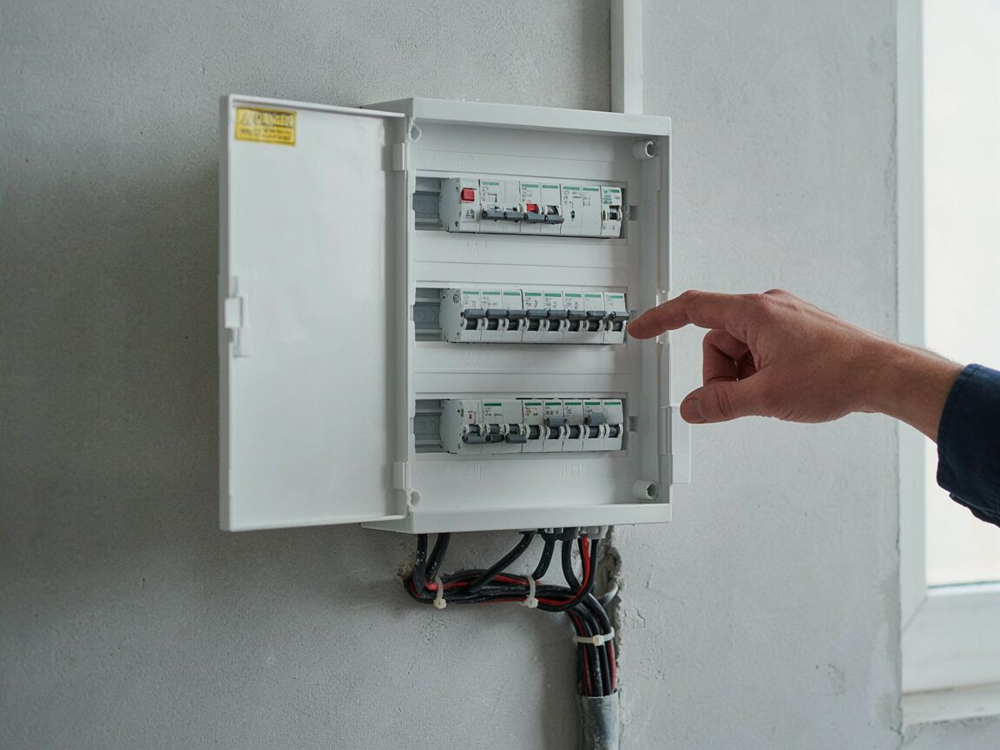
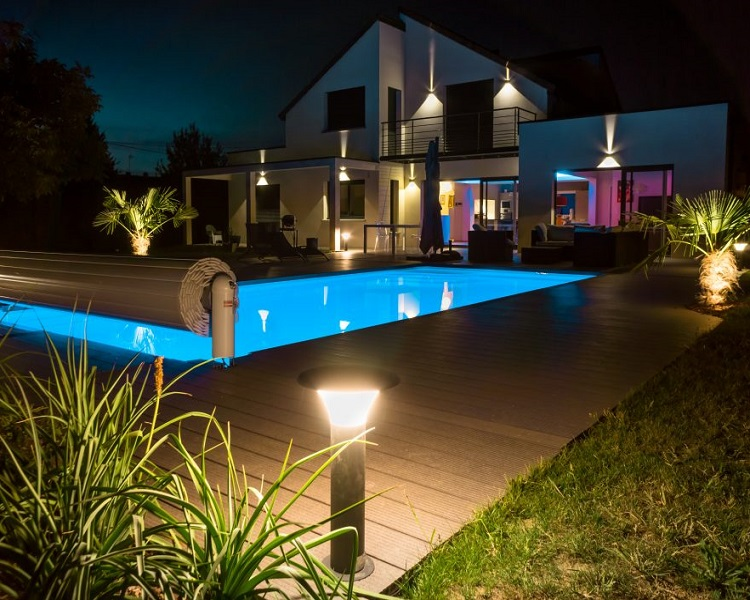

لا يوجد مقال مطابق. كل المواضيع.

كم مقبسا على نفس الدارة الكهربائية؟ قواعد معيار NF C 15-100
يتوقف عدد المقابس المسموح به على دارة واحدة على مقطع الأسلاك وعيار القاطع. إليكم المرجعيات التي يحددها معيار NF C 15-100، المرجع المعتمد لدى مكاتب الدراسات في المغرب.
اقرأ المقال ←
الدارات المخصصة الإلزامية: الفرن، آلة الغسيل، المكيف…
بعض الأجهزة يجب أن يكون لها خط خاص بها انطلاقا من اللوحة. ما هي، وبأي مقطع وأي قاطع، وما الذي ينبغي توقعه لفيلا مكيفة في مراكش.
اقرأ المقال ←
الفرن وصفيحة الطهي: أي كابل وأي قاطع؟
يتركز في المطبخ أقوى أجهزة المنزل. إليكم المقاطع المعتادة للكابلات وعيارات القواطع للفرن والصفيحة، والأخطاء الشائعة في الورش.
اقرأ المقال ←
القاطع أو المفتاح التفاضلي: ما الفرق بينهما؟
ثلاثة أجهزة بأسماء متقاربة، وثلاثة أدوار مختلفة في اللوحة الكهربائية. فهم الفرق يتيح قراءة عرض الأسعار ومعرفة سبب « فصل » جهاز ما.
اقرأ المقال ←
تفاضلي 30 mA من النوع AC أو A أو F: أيها لأي دارة؟
ليست كل المفاتيح التفاضلية 30 mA تكشف التسربات نفسها. فالنوع المناسب يتوقف على الأجهزة الموصولة، والمسألة مهمة في فيلا مغربية مجهزة بكثافة بالتكييف.
اقرأ المقال ←
كم مفتاحا تفاضليا حسب مساحة المسكن؟
يتوقف عدد المفاتيح التفاضلية على مساحة المسكن وعدد الدارات. إليكم الجدول المرجعي وطريقة توزيع الدارات في فيلا.
اقرأ المقال ←
كهرباء المطبخ: المآخذ والدارات والارتفاعات حسب المعيار
المطبخ هو أكثر غرف المنزل حملًا كهربائيًا. إليكم عدد المآخذ، والدارات الواجب توقعها، والمواضع التي يجب تجنبها، وفق مرجعيات NF C 15-100.
اقرأ المقال ←
مانع الصواعق (parafoudre): متى يكون مفيدًا أو إلزاميًا للمنزل؟
قد تكفي عاصفة رعدية على بعد عدة كيلومترات لإتلاف جهاز الإنترنت أو مركز الإنذار أو البطاقة الإلكترونية لمكيّف. يحدّ مانع الصواعق من هذه الارتفاعات المفاجئة في الجهد؛ إليكم متى يكون مطلوبًا ومتى يكون مجرد خيار معقول.
اقرأ المقال ←
أحادي الطور أم ثلاثي الطور لفيلا في المغرب: كيف تختار
يتم الاختيار بين الأحادي الطور والثلاثي الطور عند تقديم طلب الربط لدى الموزع. ويتوقف على القدرة الإجمالية للفيلا وعلى بعض التجهيزات الكبيرة.
اقرأ المقال ←
حصيلة القدرة لفيلا: ما قدرة العداد التي يجب طلبها
جمع قدرات جميع الأجهزة يعطي رقمًا مرتفعًا جدًا: فهي لا تعمل كلها في الوقت نفسه أبدًا. تُستعمل حصيلة القدرة لطلب الربط المناسب، لا أضعف من اللازم ولا مبالغًا في حجمه.
اقرأ المقال ←
هبوط الجهد وطول الكابل: الحساب والقواعد الواجب احترامها
كلما كان الكابل أطول وأرفع، انخفض الجهد في نهايته. وفي فيلا بحديقة أو ملحق مسبح (pool house) أو بوابة بعيدة، غالبًا ما يكون الطول، لا عيار القاطع، هو ما يفرض مقطع الكابل.
اقرأ المقال ←
كهرباء المسبح: الأحجام، الجهد المنخفض جدًا الآمن 12 V وعلبة الترشيح
يجمع المسبح بين الماء وجسم الإنسان والكهرباء: إنه التركيب الأخطر. وتقوم القواعد على أحجام حول الحوض، كما في الحمّام، لكن بمسافات أكبر.
اقرأ المقال ←هل تحتاج إلى دراسة لمشروعك؟
تنجز SIGMA ICC الدراسات التقنية وتتبع الأوراش في مراكش وفي جميع أنحاء المغرب.